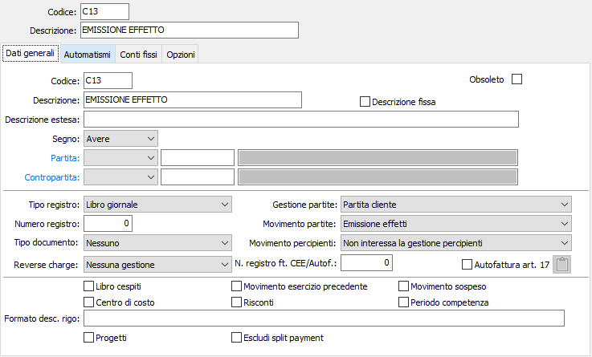
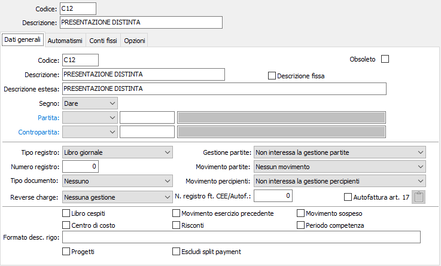

Introduzione
La procedura Effetti attivi gestisce la problematica relativa all’emissione e al trattamento degli effetti attivi (Ricevute Bancarie e Tratte autorizzate).
Può essere utilizzata sia dagli utenti che dispongono del modulo Contabilità generale base, sia dagli utenti che dispongono del modulo Gestione Vendite. Ancorché non abilitata la gestione delle Partite aperte, il modulo Gestione effetti attivi utilizza comunque parte del modulo Partite aperte clienti ed in particolare la tabella scadenze da cui assume le informazioni per la generazione degli effetti attivi.
Avviamento
Per attivare la procedura Effetti attivi, l'utente dovrà controllare e predisporre una serie di tabelle secondo una precisa sequenza operativa. La corretta esecuzione di tali operazioni è condizione imprescindibile per non incontrare difficoltà durante l'uso dei programmi della procedura. La sequenza prevede:
Creazione delle causali contabili per Contabilizzazione effetti attivi e Contabilizzazione distinte di presentazione effetti.
Controllo e completamento della tabella Configurazione Base
Controllo e completamento della tabella Configurazione Codici fissi
Controllo e completamento della tabella Configurazione Partite Aperte
Verifica della corretta esistenza di elementi nella tabella Conti correnti
Causali contabili relative agli Effetti attivi
Per gli utenti che utilizzano le procedure di Contabilità, la generazione degli effetti attivi o la stampa definitiva della Distinta di presentazione effetti alla banca determina la scrittura contabile di saldaconto clienti e contestuale accredito degli importi al conto Effetti in portafoglio; la stampa definitiva della Distinta di presentazione effetti alla banca crea inoltre la scrittura contabile di accredito al conto Effetti all’incasso e di addebito al conto Effetti in portafoglio.
La generazione automatica di tali scritture contabili è garantita dalla presenza di apposite causali contabili:
Causale Emissione effetti

La causale contabile prevede l’uso dei sottoconti clienti (di cui non viene indicato il codice), in Avere, e l’uso di un sottoconto Effetti in portafoglio in dare. Attiva le partite aperte clienti per emissione effetti.
Se l’organizzazione aziendale lo richiede, è possibile creare più causali contabili accese rispettivamente a Portafoglio Ricevute Bancarie, a Portafoglio Tratte, ecc.
Causale Contabilizzazione distinte

La causale contabile omette l’indicazione del conto di accredito effetti (Banca c/effetti all’incasso) che verrà desunto dal Conto corrente bancario utilizzato per l’intestazione della distinta di presentazione.
In avere utilizza, stornandolo, il conto Portafoglio Ricevute bancarie.
Anche in questo caso, se l’organizzazione aziendale lo richiede, è possibile creare più causali contabili accese rispettivamente a Portafoglio Ricevute Bancarie, a Portafoglio Tratte, ecc.
I programmi di Contabilizzazione fatture, per gli utenti che utilizzano la procedura di Gestione vendite, o di Immissione movimenti contabili relativamente alla registrazione delle fatture di vendita, per gli utenti che non utilizzano la procedura di gestione vendite, provvedono a creare nelle Partite aperte le “scadenze” delle fatture stesse sulla base delle condizioni di pagamento presenti nell’anagrafica clienti o inserite dall’utente.
Le scadenze attive che prevedono un tipo di pagamento RB (ricevuta bancaria) e TR (tratta autorizzata) e CE (cessione) danno origine alla gestione degli effetti attivi.
Tutti i programmi del modulo sono raggruppati sotto la scelta Effetti attivi della procedura Contabilità.